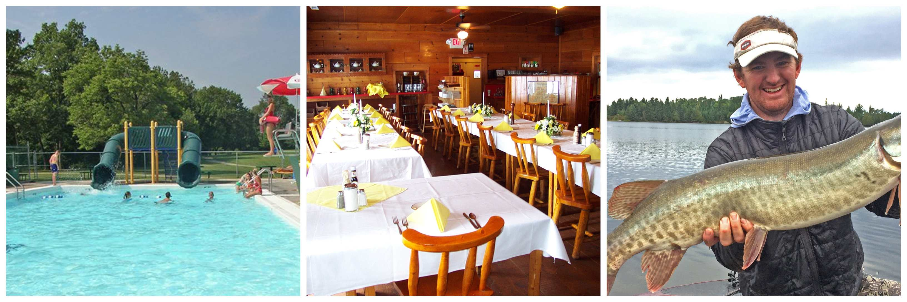

Lake Of The Woods Campground
Location: N9070 14th Ave, Wautoma, Wisconsin 54982
The Lake of the Woods Campground is situated on 122 acres of Wisconsin wooded land with room to enjoy all different types of activities. This is the perfect campground to have your next family get together, wedding, or any type of family event.This is one campground that is open year-round and provides plenty of fun whether it is in the winter or the summer.
Amenities are plentiful here and include but not limited to a barn store, themed weekends, a game room, a bar/restaurant (air-conditioned), fishing, swimming, hiking, and many more. Located near the playground or exactly on the waterfront are the cabin rentals that are all fully furnished. If you decide to bring your rig or just a simple tent setup, then the rental sites are all spacious and have amenities such as electric and water hook-ups.
Lake of the woods rentals
Sleeping Cabins
Lakefront Deluxe Cabin
Lakefront Premier Cabin
The Lake House on Johns Lake
- Linens Provided
- Board Games
- Air Conditioning
- Fireplace
- Vehicle and Trailer Parking
- Outdoor Firepit
- Outdoor Grill
- Pier/Dock
- Deck or Patio
- Canoe/Kayak
- Furnished Kitchen
- Free Firewood Provided
- Seasonal Rental
- Sand Beach
- VCR/DVD Player
- Rentals with Kitchenette
- Paddleboats
- Housekeeping Rentals
- Canoes
- Rentals with Bathroom
- Golf Carts
If you decide to stay in or around the lake of the woods campground, then there are many different types of cabins you can rent.
These types come with all the same luxuries of home. These cabins have the space to sleep up to 8 people. They are equipped with a full bath, 4 bunks, a queen bed, screened front porch, and a full-size sleeper sofa in the living room. This cabin is also pet-friendly.
These types of cabins sleep up to 7 people but does not allow pets.
Wautoma Rentals
Location: Wautoma, WI 54982

Located in Wautoma Wisconsin, The Lake House on Johns Lake is a great place to stay. There is a total of three bedrooms that can sleep up to 6 people. There is only one bathroom so if you are among a group of six people you gotta try and make a bathroom schedule for everyone. One downside to staying here is that pets are not allowed.
Amenities at The Lake House on Johns Lake
This cabin will make anyone happy by how clean it is, this cabin has a professional cleaning crew that cleans the whole cabin after each stay.
Things to do for everyone
While the more youthful kids are climbing up and swinging on our big play area, the rest of the household can play some Horse Shoes close by. The Video game Space (linked to the shop) is a huge hit with older kids and a terrific location to hang out on the days that are rainy.
MenMales are welcome to join the "Shake at 8", this is where the visitors and residents alike go for early morning coffee and shake dice at the shop. Be careful-- whoever loses has to purchase the coffee!
WOMENThe women have their time too, for talking and everything else that they like to do. Ladies, coffee, and cards are likewise held at the shop on Tuesdays and Fridays early mornings at 9:00 a.m.
KIDSKids will want to watch out for "The Train." On bright sunny days, the train has actually been known to show up. When it does, all the kids can hop aboard for a fun ride around the camping site. Keep your eyes open, since you never ever understand when it'll appear!
Everybody is welcome to take a bike ride or walk around the camping site. You may wish to take pleasure in some peaceful quiet time by the Rainy River, seeing the eagles and pelicans zip by. And you can definitely bring your canoe or kayak for a little paddling or your boat for some fishing.
The location around Lake of the Woods likewise uses a broad range of outside activities for family fun. You can likewise take benefit of the location's boat rentals, fishing guides, and capture a walleye or that notorious "Big One."
If you're missing out on a bit of the "city life", you can visit the town of Baudette which provides a range of shopping, dining establishments, a cinema, bowling, spa, skateboard park and play area. After an exciting day, you can unwind with your family around the campfire, while you share stories about the day's excellent experiences.
Recreational Amenities in Lake of the Woods
- Swimming Pool
- Swimming Beach
- Pond
- Playground
- Ball Diamond
- Pavilion/Rec Hall
- Game Room
- Outdoor Movies
- Fishing
- Bait
- Trails
- ATV Trails
- Themed Weekends
- Planned Activities
- Live Entertainment
- Outdoor Movie Theater
- Tennis
- Shuffleboard
- Basketball
- Horseshoes
- Volleyball
Hours of operation
8 a.m - 4 p.m.
Policies
- Check In Time for campsites: 1 p.m.
- Check Out Time for campsites: 11 a.m.
- Check In Time for rentals: 4 p.m.
- Check Out Time for rentals: 11 a.m.
- Check In Age requirement: 21 or over.
- Campers with folding tents are allowed.
- Pets are allowed but must be kept on a leash at all times. Pets are however not allowed in some rentals except for service animals.
- Rates that are displayed are subject to service fees or charges for any damages to property.
- Late arrivals are welcome but the person who booked the campsite or rental has to call the campground before the arrival time at (920) 787-3601
Other Policies
- An administration fee of $25 will be charged if you cancel any reservation of 14 or more days before the reservation date.
- Refunds will not be made to anyone who feels uncomfortable camping out in nature. Camping is being one with nature.
Price range
Prices are from $49 up.
Discounts offered
- Military Discounts.
- Sam's Club Discounts.
First time at Lake of the Woods Campground and it was an absolute amazing time! Cabins were the best we've stayed at. If you're looking for a nice family atmosphere, this is the place for you. But it also works if you're planning an Adult weekend too! Fun resort bar, nice pool, restaurant with really good food, everything you need in one place! Weekend activities too! We had to great nights of entertainment! Forgot to add, you can rent paddle boats, row boats, Kayaks and golf carts. Hated to leave, had so much fun! And I would like to say thanks to Ellen and Kim, good job Managing the place!
Camping will always be a fun activity to enjoy with the family or even some alone time. This campground has many activities and amenities to keep anyone comfortable while camping. With 300 different types of sites to choose from, there will be one site that fits your needs to enjoy the outdoors.